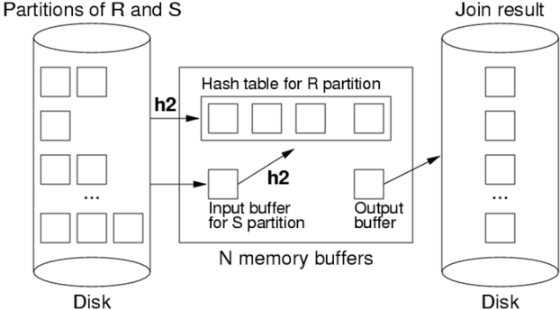

COMP9315 Week 07 Thursday Lecture
COMP9315 24T1 ♢ Week 7 Thursday Lecture ♢ [0/61]
- Assignment 1
- automarking in progress ... slowly ...
- Assignment 2
- due at start week 10 (11:59pm Monday 15 April)
- let me know of any bugs in supplied code
- Quiz 4
- released Monday week 8 ... due Friday week 8
- Exam
- Thu 9 May ... in CSE labs, closed environment, invigilated
- two 3-hour sessions ... morning + afternoon ... no overlap
- Public Holiday
- no lecture on Monday ... use empty slot in Week 10
COMP9315 24T1 ♢ Week 7 Thursday Lecture ♢ [1/61]
COMP9315 24T1 ♢ Week 7 Thursday Lecture ♢ [2/61]
So far, we have looked at ...
- block nested loop join
- more buffers ⇒ more efficient, can be optimal bR+bS
- index nested loop join
- selective index can substantially reduce # tuple comparisons
Others to look at ...
- sort-merge join
- hash join
COMP9315 24T1 ♢ Week 7 Thursday Lecture ♢ [3/61]
List names of students in all subjects, arranged by subject.
SQL query to provide this information:
select E.subj, S.name
from Student S, Enrolled E
where S.id = E.stude
order by E.subj, S.name;
And its relational algebra equivalent:
Sort[subj] ( Project[subj,name] ( Join[id=stude](Student,Enrolled) ) )
To simplify formulae, we denote
Student by
S and
Enrolled by
E
COMP9315 24T1 ♢ Week 7 Thursday Lecture ♢ [4/61]
❖ Example Join Query (cont) | |
Some database statistics:
| Sym |
Meaning |
Value |
| rS |
# student records |
20,000 |
| rE |
# enrollment records |
80,000 |
| cS |
Student records/page |
20 |
| cE |
Enrolled records/page |
40 |
| bS |
# data pages in Student |
1,000 |
| bE |
# data pages in Enrolled |
2,000 |
| rOut |
# tuples in result |
80,000 |
Also, in cost analyses below, N = number of memory buffers.
COMP9315 24T1 ♢ Week 7 Thursday Lecture ♢ [5/61]
Basic approach:
- sort both relations on join attribute
(reminder: Join [i=j] (R,S))
- scan together using merge to form result
(r,s) tuples
Advantages:
- no need to deal with "entire" S relation for each r tuple
- deal with runs of matching R and S tuples
Disadvantages:
- cost of sorting both relations
(already sorted on join key?)
- some rescanning required when long runs of S tuples
COMP9315 24T1 ♢ Week 7 Thursday Lecture ♢ [6/61]
Method requires several cursors to scan sorted relations:
-
r = current record in R relation
-
s = current record in current run in S relation
-
ss = start of current run in S relation
COMP9315 24T1 ♢ Week 7 Thursday Lecture ♢ [7/61]
Algorithm using query iterators/scanners:
Query ri, si; Tuple r,s;
ri = startScan("SortedR");
si = startScan("SortedS");
while ((r = nextTuple(ri)) != NULL
&& (s = nextTuple(si)) != NULL) {
while (r != NULL && r.i < s.j)
r = nextTuple(ri);
if (r == NULL) break;
while (s != NULL && r.i > s.j)
s = nextTuple(si);
if (s == NULL) break;
...
COMP9315 24T1 ♢ Week 7 Thursday Lecture ♢ [8/61]
...
TupleID startRun = scanCurrent(si)
while (r != NULL && r.i == s.j) {
while (s != NULL and s.j == r.i) {
addTuple(outbuf, combine(r,s));
if (isFull(outbuf)) {
writePage(outf, outp++, outbuf);
clearBuf(outbuf);
}
s = nextTuple(si);
}
r = nextTuple(ri);
setScan(si, startRun);
}
}
COMP9315 24T1 ♢ Week 7 Thursday Lecture ♢ [9/61]
Buffer requirements:
- for sort phase:
- as many as possible (remembering that cost is O(logN) )
- if insufficient buffers, sorting cost can dominate
- for merge phase:
- one output buffer for result
- one input buffer for relation R
- (preferably) enough buffers for longest run in S
COMP9315 24T1 ♢ Week 7 Thursday Lecture ♢ [10/61]
Cost of sort-merge join.
Step 1: sort each relation (if not already sorted):
- Cost =
2.bR (1 + logN-1(bR /N)) +
2.bS (1 + logN-1(bS /N))
(where N = number of memory buffers)
Step 2: merge sorted relations:
- if every run of values in S fits completely in buffers,
merge requires single scan,
Cost = bR + bS
- if some runs in of values in S are larger than buffers,
need to re-scan run for each corresponding value from R
COMP9315 24T1 ♢ Week 7 Thursday Lecture ♢ [11/61]
❖ Sort-Merge Join on Example | |
Case 1: Join[id=stude](Student,Enrolled)
- relations are not sorted on id#
- memory buffers N=32; all runs are of length < 30
| Cost |
= |
sort(S) + sort(E) + bS + bE |
| |
= |
2bS(1+log31(bS/32)) + 2bE(1+log31(bE/32)) + bS + bE |
| |
= |
2×1000×(1+2) + 2×2000×(1+2) + 1000 + 2000 |
| |
= |
6000 + 12000 + 1000 + 2000 |
| |
= |
21,000 |
COMP9315 24T1 ♢ Week 7 Thursday Lecture ♢ [12/61]
❖ Sort-Merge Join on Example (cont) | |
Case 2: Join[id=stude](Student,Enrolled)
- Student and Enrolled already sorted on id#
- memory buffers N=4 (S input, 2 × E input, output)
- 5% of the "runs" in E span two pages
- there are no "runs" in S, since id# is a primary key
For the above, no re-scans of
E runs are ever needed
Cost = 2,000 + 1,000 = 3,000 (regardless of which relation is outer)
COMP9315 24T1 ♢ Week 7 Thursday Lecture ♢ [13/61]
❖ Exercise: Sort-merge Join Cost | |
Consider executing Join[i=j](S,T) with the following parameters:
- rS = 1000, bS = 50,
rT = 3000, bT = 150
- S.i is primary key, and T has index on T.j
- T is sorted on T.j, each S tuple joins with 2 T tuples
- DBMS has N = 42 buffers available for the join
Calculate the cost for evaluating the above join
- using sort-merge join
- compute #pages read/written
- compute #join-condition checks performed
COMP9315 24T1 ♢ Week 7 Thursday Lecture ♢ [14/61]
Basic idea:
- use hashing as a technique to partition relations
- to avoid having to consider all pairs of tuples
Requires sufficent memory buffers
- to hold substantial portions of partitions
- (preferably) to hold largest partition of outer relation
Other issues:
- works only for equijoin
R.i=S.j (but this is a common case)
- susceptible to data skew (or poor hash function)
Variations:
simple,
grace,
hybrid.
COMP9315 24T1 ♢ Week 7 Thursday Lecture ♢ [15/61]
Basic approach:
- hash part of outer relation R into memory buffers (build)
- scan inner relation S, using hash to search (probe)
- if R.i=S.j, then h(R.i)=h(S.j) (hash to same buffer)
- only need to check one memory buffer for each S tuple
- repeat until whole of R has been processed
No overflows allowed in in-memory hash table
- works best with uniform hash function
- can be adversely affected by data/hash skew
COMP9315 24T1 ♢ Week 7 Thursday Lecture ♢ [16/61]
❖ Simple Hash Join (cont) | |
Data flow:
COMP9315 24T1 ♢ Week 7 Thursday Lecture ♢ [17/61]
❖ Simple Hash Join (cont) | |
Algorithm for simple hash join Join[R.i=S.j](R,S):
for each tuple r in relation R {
if (buffer[h(R.i)] is full) {
for each tuple s in relation S {
for each tuple rr in buffer[h(S.j)] {
if ((rr,s) satisfies join condition) {
add (rr,s) to result
} } }
clear all hash table buffers
}
insert r into buffer[h(R.i)]
}
Best case: # join tests ≤ rS.cR
(cf. nested-loop rS.rR)
COMP9315 24T1 ♢ Week 7 Thursday Lecture ♢ [18/61]
❖ Simple Hash Join (cont) | |
Cost for simple hash join ...
Best case: all tuples of R fit in the hash table
- Cost = bR + bS
- Same page reads as block nested loop, but less join tests
Good case: refill hash table
m times
(where m ≥ ceil(bR / (N-2)) )
- Cost = bR + m.bS
- More page reads that block nested loop, but less join tests
Worst case: everything hashes to same page
COMP9315 24T1 ♢ Week 7 Thursday Lecture ♢ [19/61]
❖ Exercise: Simple Hash Join Cost | |
Consider executing Join[i=j](R,S) with the following parameters:
- rR = 1000, bR = 50,
rS = 3000, bS = 150
- R.i is primary key, each R tuple joins with 2 S tuples
- DBMS has N = 43 buffers available for the join
- data + hash have approx uniform distribution
Calculate the cost for evaluating the above join
- using simple hash join
- compute #pages read/written
- compute #join-condition checks performed
- assume that hash table has L=0.75 for each partition
COMP9315 24T1 ♢ Week 7 Thursday Lecture ♢ [20/61]
Basic approach (for R ⋈ S ):
- partition both relations on join attribute using hashing (h1)
- load each partition of R into N-buffer hash table (h2)
- scan through corresponding partition of S to form results
- repeat until all partitions exhausted
For best-case cost (
O(bR + bS) ):
- need ≥ √bR buffers to hold largest partition of outer relation
If
< √bR buffers or poor hash distribution
- need to scan some partitions of S multiple times
COMP9315 24T1 ♢ Week 7 Thursday Lecture ♢ [21/61]
Partition phase (applied to both R and S):
COMP9315 24T1 ♢ Week 7 Thursday Lecture ♢ [22/61]
Probe/join phase:

The second hash function (h2) simply speeds up the matching process.
Without it, would need to scan entire R partition for each record in S partition.
COMP9315 24T1 ♢ Week 7 Thursday Lecture ♢ [23/61]
Cost of grace hash join:
- #pages in all partition files of Rel ≅ bRel
(maybe slightly more)
- partition relation R ...
Cost =
bR.Tr + bR.Tw
= 2bR
- partition relation S ...
Cost =
bS.Tr + bS.Tw
= 2bS
- probe/join requires one scan of each (partitioned) relation
Cost = bR + bS
- all hashing and comparison occurs in memory ⇒ ≅0 cost
Total Cost =
2bR + 2bS + bR + bS =
3 (bR + bS)
COMP9315 24T1 ♢ Week 7 Thursday Lecture ♢ [24/61]
❖ Exercise: Grace Hash Join Cost | |
Consider executing Join[i=j](R,S) with the following parameters:
- rR = 1000, bR = 50,
rS = 3000, bS = 150
- R.i is primary key, each R tuple joins with 2 S tuples
- DBMS has N = 42 buffers available for the join
- data + hash have reasonably uniform distribution
Calculate the cost for evaluating the above join
- using Grace hash join
- compute #pages read/written
- compute #join-condition checks performed
- assume that no R partition is larger than 40 pages
COMP9315 24T1 ♢ Week 7 Thursday Lecture ♢ [25/61]
❖ Exercise: Grace Hash Join Cost | |
Consider executing Join[i=j](R,S) with the following parameters:
- rR = 1000, bR = 50,
rS = 3000, bS = 150
- R.i is primary key, each R tuple joins with 2 S tuples
- DBMS has N = 42 buffers available for the join
- data + hash have reasonably uniform distribution
Calculate the cost for evaluating the above join
- using Grace hash join
- compute #pages read/written
- compute #join-condition checks performed
- assume that one R partition has 50 pages, others < 40 pages
- assume that the corresponding S partition has 30 pages
COMP9315 24T1 ♢ Week 7 Thursday Lecture ♢ [26/61]
A variant of grace join if we have √bR < N < bR+2
- create k≪N partitions, m in memory, k-m on disk
- buffers: 1 input, k-m output, p = N-(k-m)-1 for in-memory partitions
When we come to scan and partition
S relation
- any tuple with hash in range 0..m-1 can be resolved
- other tuples are written to one of k partition files for S
Final phase is same as grace join, but with only
k partitions.
Comparison:
- grace hash join creates N-1 partitions on disk
- hybrid hash join creates m (memory) + k (disk) partitions
COMP9315 24T1 ♢ Week 7 Thursday Lecture ♢ [27/61]
❖ Hybrid Hash Join (cont) | |
First phase of hybrid hash join with m=1 (partitioning R):
COMP9315 24T1 ♢ Week 7 Thursday Lecture ♢ [28/61]
❖ Hybrid Hash Join (cont) | |
Next phase of hybrid hash join with m=1 (partitioning S):
COMP9315 24T1 ♢ Week 7 Thursday Lecture ♢ [29/61]
❖ Hybrid Hash Join (cont) | |
Final phase of hybrid hash join with m=1 (finishing join):
COMP9315 24T1 ♢ Week 7 Thursday Lecture ♢ [30/61]
❖ Hybrid Hash Join (cont) | |
Some observations:
- with k partitions, each partition has expected size bR/k
- holding m partitions in memory needs ceil(mbR/k) buffers
- trade-off between in-memory partition space and #partitions
Best-cost scenario:
- m = 1, k ≅ ceil(bR/N) (satisfying above constraint)
Other notes:
- if N = bR+2, using block nested loop join is simpler
- cost depends on N (but less than grace hash join)
COMP9315 24T1 ♢ Week 7 Thursday Lecture ♢ [31/61]
❖ Exercise: Hybrid Hash Join Cost | |
Consider executing Join[i=j](R,S) with the following parameters:
- rR = 1000, bR = 50,
rS = 3000, bS = 150, cRes = 30
- R.i is primary key, each R tuple joins with 2 S tuples
- DBMS has N = 42 buffers available for the join
- data + hash have reasonably uniform distribution
Calculate the cost for evaluating the above join
- using hybrid hash join with m=1, p=40
- compute #pages read/written
- compute #join-condition checks performed
- assume that no R partition is larger than 40 pages
COMP9315 24T1 ♢ Week 7 Thursday Lecture ♢ [32/61]
No single join algorithm is superior in some overall sense.
Which algorithm is best for a given query depends on:
- sizes of relations being joined, size of buffer pool
- any indexing on relations, whether relations are sorted
- which attributes and operations are used in the query
- number of tuples in S matching each tuple in R
- distribution of data values (uniform, skew, ...)
Choosing the "best" join algorithm is critical because the
cost difference between best and worst case can be very large.
E.g. Join[id=stude](Student,Enrolled): 3,000 ... 2,000,000
COMP9315 24T1 ♢ Week 7 Thursday Lecture ♢ [33/61]
Join implementations are under: src/backend/executor
PostgreSQL suports three kinds of join:
- nested loop join (
nodeNestloop.c)
- sort-merge join (
nodeMergejoin.c)
- hash join (
nodeHashjoin.c) (hybrid hash join)
Query optimiser chooses appropriate join, by considering
- physical characteristics of tables being joined
- estimated selectivity (likely number of result tuples)
COMP9315 24T1 ♢ Week 7 Thursday Lecture ♢ [34/61]
Above discussion was all in terms of theta inner-join.
How would the algorithms above adapt to outer join?
Consider the following ...
select *
from R left outer join S on (R.i = S.j)
select *
from R right outer join S on (R.i = S.j)
select *
from R full outer join S on (R.i = S.j)
COMP9315 24T1 ♢ Week 7 Thursday Lecture ♢ [35/61]
COMP9315 24T1 ♢ Week 7 Thursday Lecture ♢ [36/61]
COMP9315 24T1 ♢ Week 7 Thursday Lecture ♢ [37/61]
❖ Query Evaluation (cont) | |
A query in SQL:
- states what kind of answers are required (declarative)
- does not say how they should be computed (procedural)
A
query evaluator/processor :
- takes declarative description of query
(in SQL)
- parses query to internal representation
(relational algebra)
- determines plan for answering query
(expressed as DBMS ops)
- executes method via DBMS engine
(to produce result tuples)
Some DBMSs can save query plans for later re-use.
COMP9315 24T1 ♢ Week 7 Thursday Lecture ♢ [38/61]
❖ Query Evaluation (cont) | |
Internals of the query evaluation "black-box":
COMP9315 24T1 ♢ Week 7 Thursday Lecture ♢ [39/61]
❖ Query Evaluation (cont) | |
DBMSs provide several "flavours" of each RA operation.
For example:
Similarly, π and ⋈ have versions to match
specific query types.
COMP9315 24T1 ♢ Week 7 Thursday Lecture ♢ [40/61]
❖ Query Evaluation (cont) | |
We call these specialised version of RA operations RelOps.
One major task of the query processor:
- given a RA expression to be evaluated
- find a combination of RelOps to do this efficiently
Requires the query translator/optimiser to consider
- information about relations (e.g. sizes, primary keys, ...)
- information about operations (e.g. selection reduces size)
RelOps are realised at execution time
- as a collection of inter-communicating nodes
- communicating either via pipelines or temporary relations
COMP9315 24T1 ♢ Week 7 Thursday Lecture ♢ [41/61]
Relational algebra expression of SQL query
- intermediate query representation
- logical query plan
Execution plan as collection of RelOps
- query evaluation plan
- query execution plan
- physical query plan
Representation of RA operators and expressions
- σ = Select = Sel,
π = Project = Proj
- R ⋈ S = R Join S = Join(R,S),
∧ = &, ∨ = |
COMP9315 24T1 ♢ Week 7 Thursday Lecture ♢ [42/61]
Query translation: SQL statement text → RA expression
COMP9315 24T1 ♢ Week 7 Thursday Lecture ♢ [43/61]
Translation step: SQL text → RA expression
Example:
SQL: select name from Students where id=7654321;
RA: Proj[name](Sel[id=7654321]Students)
Processes: lexer/parser, mapping rules, rewriting rules.
Mapping from SQL to RA may include some optimisations, e.g.
select * from Students where id = 54321 and age > 50;
Sel[age>50](Sel[id=54321]Students)
Sel[id=54321&age>50](Students)
COMP9315 24T1 ♢ Week 7 Thursday Lecture ♢ [44/61]
Parsing task is similar to that for programming languages.
Language elements:
- keywords:
create, select, from, where, ...
- identifiers:
Students, name, id, CourseCode, ...
- operators:
+, -, =, <, >, AND, OR, NOT, IN, ...
- constants:
'abc', 123, 3.1, '01-jan-1970', ...
PostgreSQL parser ...
- implemented via lex/yacc (
src/backend/parser)
- maps all identifiers to lower-case (A-Z → a-z)
- needs to handle user-extendable operator set
- makes extensive use of catalog (
src/backend/catalog)
COMP9315 24T1 ♢ Week 7 Thursday Lecture ♢ [45/61]
Remaining steps in processing an SQL statement
- parse, map to relation algebra (RA) expression
- transform to more efficient RA expression
- instantiate RA operators to DBMS operations
- execute DBMS operations (aka query plan)
Cost-based optimisation:
- generate possible query plans (via rewriting/heuristics)
- estimate cost of each plan (using costs of operations)
- choose the lowest-cost plan (... and choose quickly)
COMP9315 24T1 ♢ Week 7 Thursday Lecture ♢ [46/61]
❖ Expression Rewriting Rules | |
Since RA is a well-defined formal system
- there exist many algebraic laws on RA expressions
- which can be used as a basis for expression rewriting
- in order to produce equivalent (more-efficient?) expressions
Expression transformation based on such rules can be used
- to simplify/improve SQL→RA mapping results
- to generate new plan variations to check in query optimisation
COMP9315 24T1 ♢ Week 7 Thursday Lecture ♢ [47/61]
❖ Relational Algebra Laws | |
Commutative and Associative Laws:
- R ⋈ S ↔ S ⋈ R, (R ⋈ S) ⋈ T ↔ R ⋈ (S ⋈ T) (natural join)
- R ∪ S ↔ S ∪ R, (R ∪ S) ∪ T ↔ R ∪ (S ∪ T)
- R ⋈Cond S ↔ S ⋈Cond R (theta join)
- σc ( σd (R)) ↔ σd ( σc (R))
Selection splitting
(where c and d are conditions):
- σc∧d(R) ↔ σc ( σd (R))
- σc∨d(R) ↔ σc(R) ∪ σd(R)
COMP9315 24T1 ♢ Week 7 Thursday Lecture ♢ [48/61]
❖ Relational Algebra Laws (cont) | |
Selection pushing ( σc(R ∪ S) and σc(R ∪ S) ):
- σc(R ∪ S) ↔ σcR ∪ σcS,
σc(R ∩ S) ↔ σcR ∩ σcS
Selection pushing with join ...
- σc (R ⋈ S) ↔ σc(R) ⋈ S
(if c refers only to attributes from R )
- σc (R ⋈ S) ↔ R ⋈ σc(S)
(if c refers only to attributes from S )
If
condition contains attributes from both
R and
S:
- σc′∧c″ (R ⋈ S) ↔ σc′(R) ⋈ σc″(S)
- c′ contains only R attributes, c″ contains only S attributes
COMP9315 24T1 ♢ Week 7 Thursday Lecture ♢ [49/61]
❖ Relational Algebra Laws (cont) | |
Rewrite rules for projection ...
All but last projection can be ignored:
- πL1 ( πL2 ( ... πLn (R))) → πL1 (R)
Projections can be pushed into joins:
- πL (R ⋈c S) ↔ πL ( πM(R) ⋈c πN(S) )
where
- M and N must contain all attributes needed for c
- M and N must contain all attributes used in L
(L ⊂ M∪N)
COMP9315 24T1 ♢ Week 7 Thursday Lecture ♢ [50/61]
❖ Relational Algebra Laws (cont) | |
Subqueries ⇒ convert to a join
Example: (on schema Courses(id,code,...), Enrolments(cid,sid,...), Students(id,name,...)
select c.code, count(*)
from Courses c
where c.id in (select cid from Enrolments)
group by c.code
becomes
select c.code, count(*)
from Courses c join Enrolments e on c.id = e.cid
group by c.code
COMP9315 24T1 ♢ Week 7 Thursday Lecture ♢ [51/61]
❖ Relational Algebra Laws (cont) | |
But not all subqueries can be converted to join, e.g.
select e.sid as student_id, e.cid as course_id
from Enrolments e
where e.sid = (select max(id) from Students)
has to be evaluated as
Val = max[id]Students
Res = π(sid,cid)(σsid=ValEnrolments)
COMP9315 24T1 ♢ Week 7 Thursday Lecture ♢ [52/61]
COMP9315 24T1 ♢ Week 7 Thursday Lecture ♢ [53/61]
Query optimiser: RA expression → efficient evaluation plan
COMP9315 24T1 ♢ Week 7 Thursday Lecture ♢ [54/61]
❖ Query Optimisation (cont) | |
Query optimisation is a critical step in query evaluation.
The query optimiser
- takes relational algebra expression from SQL compiler
- produces sequence of RelOps to evaluate the expression
- query execution plan should provide efficient evaluation
"Optimisation" is a misnomer since query optimisers
- aim to find a good plan ... but maybe not optimal
Observed Query Time = Planning time + Evaluation time
COMP9315 24T1 ♢ Week 7 Thursday Lecture ♢ [55/61]
❖ Query Optimisation (cont) | |
Why do we not generate optimal query execution plans?
Finding an optimal query plan ...
- requires exhaustive search of a space of possible plans
- for each possible plan, need to estimate cost
(not cheap)
Even for relatively small query, search space is
very large.
Compromise:
- do limited search of query plan space
(guided by heuristics)
- quickly choose a reasonably efficient execution plan
COMP9315 24T1 ♢ Week 7 Thursday Lecture ♢ [56/61]
❖ Approaches to Optimisation | |
Three main classes of techniques developed:
- algebraic (equivalences, rewriting, heuristics)
- physical (execution costs, search-based)
- semantic (application properties, heuristics)
All driven by aim of minimising
(or at least reducing) "cost".
Real query optimisers use a combination of algrebraic+physical.
Semantic QO is good idea, but expensive/difficult to implement.
COMP9315 24T1 ♢ Week 7 Thursday Lecture ♢ [57/61]
❖ Approaches to Optimisation (cont) | |
Example of optimisation transformations:
For join, may also consider sort/merge join and hash join.
COMP9315 24T1 ♢ Week 7 Thursday Lecture ♢ [58/61]
❖ Cost-based Query Optimiser | |
Approximate algorithm for cost-based optimisation:
translate SQL query to RAexp
for enough transformations RA' of RAexp {
while (more choices for RelOps) {
Plan = {}; i = 0; cost = 0
for each node e of RA' {
ROp = select RelOp method for e
Plan = Plan ∪ ROp
cost += Cost(ROp)
}
if (cost < MinCost)
{ MinCost = cost; BestPlan = Plan }
}
}
Heuristics: push selections down, consider only left-deep join trees.
COMP9315 24T1 ♢ Week 7 Thursday Lecture ♢ [59/61]
❖ Exercise: Alternative Join Plans | |
Consider the schema
Students(id,name,....) Enrol(student,course,mark)
Staff(id,name,...) Courses(id,code,term,lic,...)
the following query on this schema
select c.code, s.id, s.name
from Students s, Enrol e, Courses c, Staff f
where s.id=e.student and e.course=c.id
and c.lic=f.id and c.term='11s2'
and f.name='John Shepherd'
Show some possible evaluation orders for this query.
COMP9315 24T1 ♢ Week 7 Thursday Lecture ♢ [60/61]
❖ Cost Models and Analysis | |
The cost of evaluating a query is determined by:
- size of relations (database relations and temporary relations)
- access mechanisms (indexing, hashing, sorting, join algorithms)
- size/number of main memory buffers (and replacement strategy)
Analysis of costs involves
estimating:
- size of intermediate results
- number of secondary storage accesses
COMP9315 24T1 ♢ Week 7 Thursday Lecture ♢ [61/61]
Produced: 28 Mar 2024
![[Diagram:Pics/join/sort-merge.png]](./lec12_files/sort-merge.png)
![[Diagram:Pics/join/grace-hash1.png]](./lec12_files/grace-hash1.png)
![[Diagram:Pics/join/hyb-hash1.png]](./lec12_files/hyb-hash1.png)
![[Diagram:Pics/qproc/qproc2.png]](./lec12_files/qproc2.png)